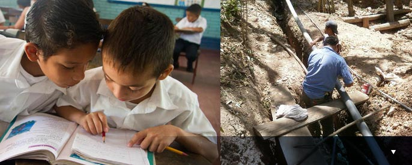
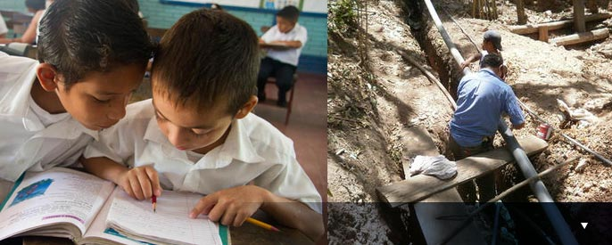

St. John's is a place where people's lives are transformed by encountering the love of God in community. Christian faith isn't an idea; it's an experience. We invite you to explore that experience with us through worship, fellowship and service.
ABOUT ST JOHN'S
Located around the corner from the busy Mission-16th Street-Valencia corridors in San Francisco's north Mission District, St. John's has been described by many as an oasis not only for the tranquility of our garden amidst the surrounding bustling streets, or the warm golden light that fills our soaring nave on a sunny day, but because so many have found St. John's to be a place of loving peace, healing, and renewal in an often all-too-broken world.
OUR MISSION
Our mission is to live, love, and serve in the hope and joy of the risen Christ.
Our vision: We seek to be a Christian community in which people of all sexual orientations, gender identities, cultures, and colors are welcomed and their gifts are celebrated.
Our Core Values: We are a Eucharistic worshipping community in the Anglican tradition. Our celebration of the Holy Eucharist, marked by beautiful music, is the heart of our common life.
We are a Christ-centered community. For people of all ages, we value faith formation that engages the mind as well as the heart, and provides the foundation for vibrant lay ministry.
We have a special vocation to respect and advocate for the dignity of gay, lesbian, bisexual, and transgender people. This by no means defines the full extent of our baptismal promise to respect the dignity of every human being, but it is a crucial element of that promise in our ministry context.
We value diversity and welcome anyone who wishes to explore Christian faith and practice.
OUR MISSION
We value connection, and strive to promote a sense of belonging among the members of the parish that readily includes newcomers. This is often talked about in terms of communication or pastoral care or hospitality, but it is fundamentally about feeling connected to God and to one another.
We value the North Mission neighborhood. Our location in this particular place spiritually anchors us and gives substance to our mission and ministry. This neighborhood keeps us grounded in reality.
ST JOHN'S HISTORY
The third parish established in the new Episcopal Diocese of California, St. John's began in 1857 as a pioneer outpost in rented space at the edge of swamps and sand dunes. It quickly grew into a thriving 'society parish' of sorts, helping to found schools, hospitals, and chapels in the rapidly growing Mission District.
By 1861, St. John's was able to hire its first rector, the Rev. Thomas Brotherton, and in 1862, a new church building, which could accommodate 250, opened, with fundraising spearheaded by the newly created Ladies Parish Aid Society. The first St. John's was a redwood church in Pointed Gothic style at the northeast corner of Valencia and 15th Streets. Within just 30 years of its founding, St. John's had become a large and prosperous parish.
ST JOHN'S HISTORY
During this early golden age, St. John's played a key role, led by Rev. Brotherton, in founding St. Luke's Hospital (1871) and provided financial and spiritual support to many institutions within the parish bounds, including the City and County Hospital, the Poor House, and the Protestant Episcopal Old Ladies Home.
Another early rector, the Rev. Dr. E.B. Spalding, brought the Trinity School, a distinguished boys' school, to St. John's parish in 1881 and ran it for 20 years. In 1882, the Irving Institute, a fashionable girls' school, was established under St. John's auspices at Valencia and Hill Streets.
As the city boomed and the Mission became a highly desirable residential neighborhood, St. John's continued to expand. It had become something of a society parish, home to leading businessmen, judges, and James "Sunny Jim" Rolph, eventual mayor of San Francisco and governor of California. Dr. Spalding inaugurated a building campaign to construct a cathedral-sized church. It was completed in 1891 at a cost of $57,000
But then the Great San Francisco Earthquake of 1906 struck, and the second St. John's building was destroyed in its aftermath.
ST JOHN'S HISTORY
The edifice had been dynamited to serve as a firebreak to stem the post-quake fires raging from the north and northeast, which tore a wide swath through the Mission, stopping eventually at 20th and Dolores Streets.
There was enough money (from insurance and donations from Episcopal churches across the country) to rebuild another church on the same spot. The new and current St. John's, consecrated in 1910, was designed by Herbert Maggs and Ernest Coxhead, who modeled it on the parish church of St. Stephen's, Norwich, England, in the light, soaring style known as Perpendicular Gothic or Tudor Lantern.
Keeping the red doors on Julian Street open during the Depression and war years was no mean feat. Events continued to change the neighborhood, but the church was never closed. In 1974 an arsonist destroyed the parish hall and rectory, but the charred remains were turned into a garden. The then rector, the Rev. James Brown, continued to reach out to the gay community, and built a reputation of St. John's as a place of refuge and prayer for LGBT people and their friends and families.
CLERGY & STAFF
CLERGY
The Reverend Richard L. Smith, Ph.D., Vicar
rlsmith21050@gmail.com
The Reverend Deacon Jackie Cherry
jaccherry@yahoo.com
The Reverend Dr. Jack Eastwood, Rector Emeritus
jhbernal@gmail.com
The Reverend Robert Cromey, Priest Associate
twocromeys@earthlink.net
STAFF
Aaron Nee, Music Director
parishmusician@stjohnsf.org
David Stickley, Parish Administrator
parishadmin@stjohnsf.org
LAY LEADERSHIP
BISHOP'S COMMITTEE
Timm Dobbins, Senior Warden
Robert Craig, Junior Warden
Jay Christian
Bryce Fisher-Fleig
Stoner Lichty
Delores Mays
Bonita Ann Palmer
Forrest Sedgwick
Claudia Viek
CLERKS
Diana McDonnell
Birgit Eschmann
DEANARY DELEGATES
Michael Clark
Birgit Eschmann
Liz Specht (Alternate)
Bill Sullivan (Alternate)
MISSION
HISTORY
CLERGY & STAFF
LAY LEADERSHIP
VISIT US
St. John's is located at the corner of 15th Street and Julian Avenue in San Francisco's north Mission District. Our main entrance is on Julian.
St. John's beautiful building and grounds are ideal for hosting your next special event. We are located in the Valencia corridor and are just 1-1/2 blocks from the 16th and Mission transit hub.
DIRECTIONS
The church is located one short block west and one block north of the 16th Street/Mission BART station. Several Muni bus lines pass nearby: 14-Mission, 22-Fillmore, 26-Valencia, 33-Stanyan, and 49-Van Ness/Mission.
Parking may be found for free on Julian, there is metered parking on other surrounding streets, and public garage on Hoff Street, one block south (parallel and between Valencia and Mission, and 16th and 17th). In addition, there is evening and weekend paid parking in the lots of the bank on the corner of Julian and 16th and on 14th Street between Valencia and Mission. The white zone on 15th Street may be used for brief periods for passenger unloading.
Wheelchair access is available on Caledonia Street. Please call the parish ahead of time if you need wheelchair access so that we can ensure that the pedestrian gate is open when you arrive.
RENTALS
Host your next performance or celebration at St. John's and become a part of the community that appreciates and cares for this Mission oasis. Our reasonable rates make St. John's the perfect location for your next concert, performance, private party, or other event!
St. John's historic nave affords a capacity of 300, has excellent acoustics, and is drenched with natural light. Our chairs can be arranged in any configuration, and the raised alter area serves as an excellent stage. Our library is available for meetings and small gatherings, the garden affords peace and quite perfect for appreciating the Mission weather, and our full kitchen supports your provision of hot foods. Please contact the parish office for rates, schedule, and details.
DIRECTIONS
RENTALS
WORSHIP & MUSIC
If you ask people what keeps them coming to St. John's, nine times out of ten the response is: "The worship, the music, the sincerity of the worship". "It's real. It's authentic. The people really pray and sing together!".
When we gather here to worship God, people really show up, bringing their entire selves, souls and bodies, to be enveloped by God’s presence. We invite you to join us in receiving the love that God is sharing with us and through us.
WORSHIP
The Choral Eucharist, Sundays at 10:15 am
This is the main event of St. John's congregation, the gathering of the community on the first day of the week to celebrate the resurrection of Christ and the new life he brings. Sunday morning at St. John's is a hard-to-define mix of formal and informal elements: incense and bells, choral anthems and the chanting of prayers; but also intensely active participation of everyone in prayer and song, people in jeans and t-shirts, the sharing of stories from Scripture and from our own lives. The worship is transcendent and intimate, grand and deeply personal, all at the same time.
WORSHIP
Eucharistic worship is in two-parts. In the first part, the Liturgy of the Word, we gather to hear Scriptures read and applied to our daily lives, to affirm our faith, and pray for the needs of the world. In the second part, the Liturgy of the Table, we share a sacred meal of bread and wine, the Body and Blood of Christ, remembering our unity in Christ and receiving the grace to continue Christ's presence and ministry in the world.
Our liturgy has a certain twist that is uniquely St. John's: reflecting our welcome of the queer immigrants and refugees who find their way to San Francisco; of the teachers, healers, and activists searching for spiritual roots; and of the poor, the mentally ill, and those in recovery from addiction seeking sanctuary. It's a motley crew: the people of God.
Special Liturgies
Throughout the year, we mark feast days, liturgical seasons, and Holy Week with special services, including Advent Lessons and Carols, Christmas Eve and Morning; Ash Wednesday, Palm Sunday, Holy Week, and the Great Vigil of Easter and Easter Morning services; the Feasts of St. Francis
WORSHIP
and All Souls. We also often hold a special service in memory of Matthew Shepard and all victims of hatred and violence, and a service to mark the anniversary of the assassination of Archbishop Oscar Romero of El Salvador.
Baptism: Christian Initiation
Holy Baptism is full initiation by the Word of God with water and the Holy Spirit into Christ's Body the Church. The bond which God establishes in Baptism is indissoluble. It is a sacrament or sign of God's unconditional love for us,
a love that binds us into community with one another.
In baptism we receive forgiveness of sins and are made sharers in God's own life by the indwelling of the Holy Spirit, and we respond by promising to follow the way of Jesus.
Four dates are usually set apart especially for baptism: The Sunday after All Saints, The Feast of the Baptism of Jesus, The Great Vigil of Easter, The Feast of Pentecost.
WORSHIP
Marriage
In the Episcopal Church marriage is a sacramental rite, and the commitment that two people make to each other in marriage is a sign of God's love for the whole world. At St. John's, we honor and bless the commitment between same-gender and opposite-gender couples with equal joy and dignity, and rejoice that now all couples may enjoy the benefits and obligations of both sacramental and civil marriage in California.
Funerals and Memorial Services
Respect and care for the dead and those who grieve is a sacred obligation. The sacramental rite of Christian burial is provided for all baptized people, regardless of their denominational affiliation or participation at St. John's. Memorial services are celebrated for all people of any or no religious background. There is no requirement other than the need for the support of a loving community during a time of grief and loss. Please contact the parish office for pastoral assistance during times of illness, dying, or death.
MUSIC
Music is an integral and essential part of worship at St. John's. Our music program is known for its excellent quality and distinctive style. Our volunteer choir leads the congregation in a wide range of music, from traditional Anglican and Episcopal hymns to medieval chants and Renaissance motets to American folk music and spirituals, to music written by our previous music director, Charles Rus. St. John's is also home to a number of concerts throughout the year, for example by the San Francisco Early Music Society.
St John's beautiful organ was originally built by the M. P. Möller Organ Company of Hagerstown,
MUSIC
Maryland, in 1902 for a church in Davenport, Iowa. (It is a little-known fact that Moller built more tracker organs than any other 20th-century American organ builder.)
In the early 1980s, St. John's purchased the organ, and it was moved to the Rosales shop in Los Angeles, where John DeCamp, a parishioner of St. John's, painstakingly renovated it. Much of the old pipework was used, and much was also added to expand the tonal scope of the organ. Many parishioners of the church helped in this project, which was completed in 1984. Though its most comfortable period is romantic, it is now a very eclectic organ which works well for many styles of organ music, from Buxtehude and Bach to Mendelssohn to Messiaen.
St. John's piano is an historic Hamburg Steinway, Model O, built in Germany in 1911. It produces beautiful, warm tones and is often used as accompaniment for our choir, vocal soloists and piano solo performances.
WORSHIP
MUSIC
MINISTRIES
Our community has a long tradition of working for a more just world, not only in our neighborhood, but throughout our larger world--whether it's providing food to needy seniors and families or bringing clean water to rural Nicaraguan villages, whether it's working for a just immigration reform or helping neighborhood kids get a good education or working to end unjust wars.
You, too, can make a difference. We have many volunteer opportunities. Join us!
JULIAN PANTRY
Every Saturday morning, Jean Baker gets up way before the crack of dawn to get to St. John's by 5am to open the church and start setting up for the Julian Pantry. Eventually volunteers arrive from around the neighborhood and other parts of the City. They unload the truck delivering the food, stock the tables, and share a breakfast, a time for check-in, and a brief reflection. Then they open the doors to welcome between 250 and 350 people to receive the free fresh veggies, fruits, breads. And for all the challenges of making something like this work smoothly, and there are many, Jean and her crew keep at it week after week. An unlikely cast of characters, working with Jesus, to bring food in these tough economic times to people in our neighborhood and the City.
PEACE
Join our vigils for peace every non-holiday Thursday until our nation's foreign wars are over.
When: Thursdays, noon - 1 pm
Where: Burton Federal Building, Golden Gate and Larkin, San Francisco
SOCIAL JUSTICE
With the San Francisco Organizing Project, we work to create a more just City for All.
Immigration reform: To stop our nation from tearing apart immigrant families, and to stop unjust deportations of undocumented immigrants in California.
Pursuing justice for elders: To strengthen healthcare and provide greater security and dignity for elders, including those who are LGBT in San Francisco.
Nightwalks: To reduce the violence in our neighborhood, we join up with other faith communities in nightwalks through some of the most violent corners of the Mission, stopping to light candles and praying for those who died from gun violence on our streets.
EL PORVENIR
"El Porvenir" means "the future", and clean water means a healthier future for rural Nicaraguans. El Porvenir helps the people of Nicaragua build that future by helping them provide clean drinking water for their families and communities. In addition to sustainable water and sanitation projects, El Porvenir provides health and hygiene education and reforestation.
In 2013, members of St. John's raised almost $3000 for this critical organization. Over the years several members of our community have traveled to Nicaragua to see and offer first-hand support to people in local villages building new wells. To find out more, visit their website.
MISSION GRADUATES
Mission Graduates seeks to increase the number of K-12 students in San Francisco's Mission District who are prepared for a college education through the following programs:
College Connect, a multi-year program providing structured, personalized college admissions support to students and their parents.
The Parent Partners Program designed to increase the capacity of parents in San Francisco to support their children's current academic success and future life goals.
Extended Day Programs that provide award-winning after-school academic enrichment programs serving 120 children K-5 year-round.
Today, St. John's continues its long-established relationship with this vital organization in our neighborhood. Visit their website.
JULIAN PANTRY
PEACE
SOCIAL JUSTICE
EL PORVENIR
MISSION GRADUATES
ROTA
SERMONS
NEWSLETTER
The Episcopal Church of St. John the Evangelist
1661 Fifteenth Street at Julian Avenue
(main entrance on Julian)
San Francisco, CA 94103
(415) 861-1436


 
